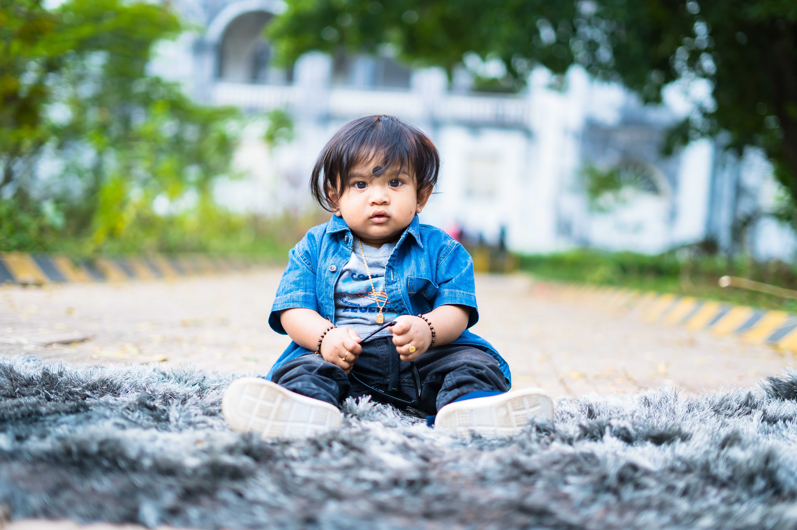

Sweet Surrender Bakery - Brand Identity
Sweet Surrender needed a logo that felt both classic and inviting. I used a hand-drawn font and warm color palette to evoke a sense of homemade goodness. This project included logo design, packaging mockups, and website header design.

Other Project Title
Description of another design project.